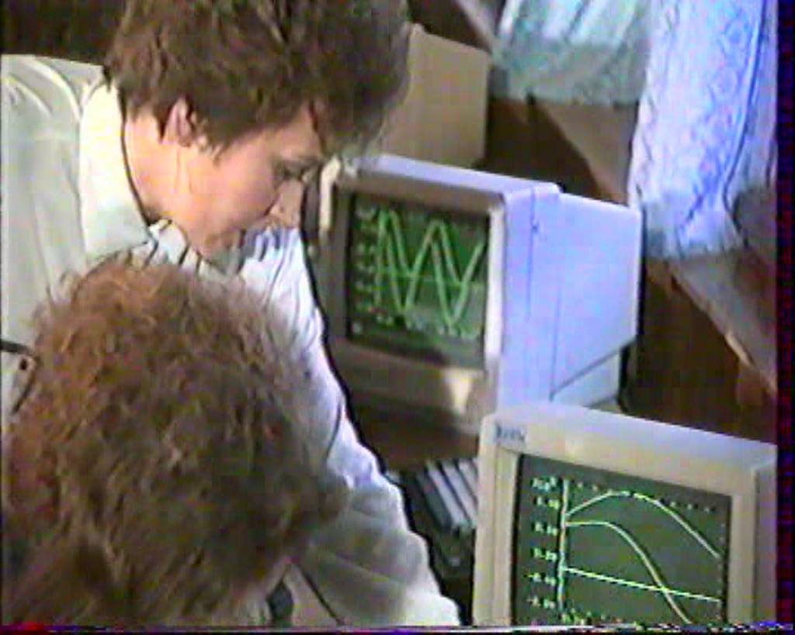

Профорієнтація училища

запрошуємо на навчання
.png)
запрошуємо на навчання

1984 р. - безмашинний варіант викладання інформатики у групах підготовки кваліфікованих робітників будівельних професій; викладачі Бестюк Л.І., Король С. В.
1989 р. - Всесоюзна нарада директорів професійно-технічних закладів на базі СПТУ №1, введено в дію кабінет інформатики та автоматизації виробництва: 11 комп’ютерів Ямахa MSX-2 (процесор: Zilog Z80A, 3.58 МГц, ПЗП: 48 КБ, BIOS + Extended BIOS (32 КБ), MSX BASIC V2.0 (16 КБ), ОЗП 128 КБ, Відео-ОЗП 128 КБ, без зовнішніх накопичувачів), у ПК викладача - кольоровий монітор і 2 дисководи на 3,5” дискети, комп’ютерний клас об’єднано у локальну мережу. Програмне забезпечення: ОС - MSX-DOS, Basiс, вбудовані текстові редактори, електронні таблиці, графіка.
1992 р. - комп’ютерний клас поповнився пятьма персональними компютерами “Пошук-1” (за сприяння Міністра освіти України Таланчука П. М.)
1996 р. - придбано пять компютерів Pentium 133 (CPU: Pentium @ 133MHz, Video: PCI Trident TGUI9440-1 1Mb, Lan Card: PCI Realtek RTL 8029 10 Mbit, RAM: 64Mb - SIMM 72pinn 2*32, FDD: EPSON SMD-300, HDD: Fujitsu 2,1 Gb, Windows NT4, Microsoft Office-97, Pascal,Adobe Photoshop 4. CorelDraw 5, AutoCad 3)

1996 р. - набрана однорічна група підготовки кваліфікованих робітників за професією “Оператор ЕОМ”. Із 32 випускників групи - 22 медалісти, у кожного - лише якісна успішність із спецпредметів; стовідсотково працевлаштовані.
1999 р. – здійснено набір груп на базі середньої та базової середньої освіти. Популярність ІТ галузі сприяла відкриттю груп ВПУ.
2003 р. - набрано ВПУ-групи за спеціальністю «Експлуатація систем обробки інформації та прийняття рішень».
Створено методичну комісію загально-технічних дисциплін на чолі з Король С. В. До колективу приєднались молоді викладачі Климчук Н.М., Поровчук О.В., Юпаткіна Н.Я., Вакулінський Р. (випускник першої групи № 8)
2007 р. - запроваджено навчання за інтегрованою професією «Оператор електронно-обчислювальних та обчислювальних машин; обліковець з реєстрації бухгалтерських даних».
Матеріально-технічна та навчально-методична бази підготовки кваліфікованих робітників за професією постійно розширювалися, оновлювалися та вдосконалювалися.
На даний час ВПУ №1 має три комп’ютерні класи, 38 ?! (за звітом — 80 )сучасних ПК, оргтехніку. Учні вивчають найсучасніше програмне забезпечення (офісні програми, графічні редактори, САПР, 3D-графіку, програмування, мультимедійне забезпечення).
Копітка праця викладачів, бажання учнів вчитися дали можливість виявити талановиту молодь, - у обласних конкурсах фахової майстерності наші учні постійно ставали переможцями.
У Всеукраїнських конкурсах фахової майстерності вибороли призові місця:
2001 р. Король Валентина
2006 р. Нагорнюк Юлія
2008 р. Пархута Богдан.
Викладачі методичної комісії ЗТД систематично підвищують свій фаховий та методичний рівні - у процесі самоосвіти та колективного навчання поглиблюють знання, приймають участь і перемагають у конкурсах навчальних і навчально-контролюючих комп’ютерних програм, впроваджують новітнє програмне забезпечення, розробляють навчальні відеоуроки. Одними з перших на Рівненщині включили до програми ОС Linux і вільне програмне забезпечення, створення анімації 3D-турів по навчальному закладу .
Відвідати наш сайт відвідати сайт